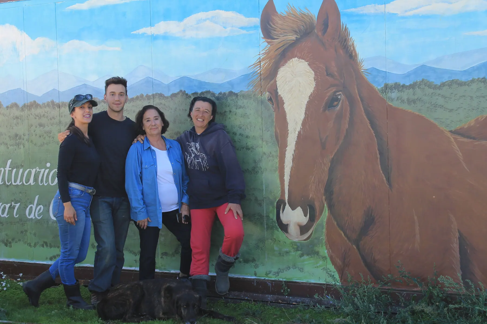

Cuidados cotidianos
Alimentación, agua, observación y atención a las necesidades que forman parte del día a día.
Información pública
Queremos que quien se acerca al Santuario pueda entender qué hacemos, qué formas de ayuda existen y qué información pública está disponible en cada momento.

Quiénes somos
La historia del Santuario está ligada a Winston y a una forma de convivir con los animales basada en la escucha, el respeto y la libertad. En la página Sobre nosotros puedes conocer el origen del proyecto y a las personas que forman parte de su recorrido.
Conocer nuestra historia →Qué hacemos
Cada necesidad es distinta. El trabajo cotidiano combina atención, alimentación, mantenimiento, cuidados de salud y una convivencia que respeta el ritmo de cada habitante.
Alimentación, agua, observación y atención a las necesidades que forman parte del día a día.
Seguimiento y atención profesional cuando un habitante necesita cuidados veterinarios u otros tratamientos.
Mantenimiento de fincas, cercados, refugios y elementos necesarios para una convivencia segura.
Cómo se utilizan las ayudas
Las distintas vías de colaboración ayudan a sostener necesidades como alimentación, cuidados de salud, mantenimiento de espacios, instalaciones y situaciones imprevistas.
No publicamos porcentajes, repartos económicos ni cifras de impacto si no contamos con documentación suficiente para presentarlos correctamente.
Conocer todas las formas de ayudar →Campañas y necesidades
Las campañas reales del Santuario tendrán aquí un punto común desde el que consultar su información y, cuando exista, su documentación pública asociada.

Conoce el proyecto del hogar definitivo y accede desde su página a los canales oficiales de colaboración.
Ver la campaña →Documentación pública
Este espacio está preparado para incorporar memorias, información económica, certificados, proyectos, informes o documentación de campañas cuando el Santuario disponga de archivos públicos válidos.
Cuando exista documentación disponible se mostrará aquí con su título, tipo, año y fecha de publicación.
Formas de colaborar
Ayuda económica, tiempo, difusión o colaboración profesional: todas las vías deben explicarse con claridad antes de que tomes una decisión.
Preguntas frecuentes
Si tu duda no aparece aquí, puedes escribirnos desde Contacto.
La página Cómo ayudar reúne las opciones económicas y no económicas disponibles en la web.
Cuando el Santuario disponga de documentos públicos válidos, se incorporarán a la sección Documentación pública de esta página, identificados por tipo y fecha.
Sí. Puedes conocer las opciones de voluntariado, participar en actividades y ayudar a difundir el trabajo del Santuario.
Las convocatorias publicadas se muestran en Actividades. Si necesitas confirmar una fecha o condición concreta, utiliza Contacto.
La página Tienda Solidaria diferencia lo que ya está disponible de las colecciones que todavía están en preparación.
Puedes utilizar el formulario de contacto y seleccionar el motivo que mejor encaje con tu consulta.
¿Te falta alguna información?
Si necesitas aclarar una colaboración, una campaña o la información publicada, escríbenos y podremos orientarte por el canal adecuado.